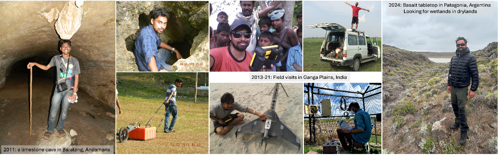

How did I become a ‘wetlands in drylands’ (WiDs) researcher?
This question was addressed in a reflection for the Wetlands in Drylands (WiDs) Research Network, first published in March 2025 and reproduced here.
How did I become a ‘wetlands in drylands’ (WiDs) researcher? Well, I can say that I kept choosing whatever path came in front of me first and kept walking, steadily, only to find myself here. But how did this journey start? I always wanted to be a scientist, even as a kid. I joined a BSc course in Hansraj College, Delhi University, in August 2008, thinking I would become a Computer Scientist (now we call them Data Scientists). By the 2nd year of my BSc, the limited available enrolments on my preferred pathway meant that I would not be able to pursue a Computer Science career, and Physics would be my pathway instead. I wanted to become either a Nuclear or Nano Physicist, but owing to various complications regarding the timing of BSc final year exams and MSc entrance exams, here too things did not work out as planned. So, in August 2011, I found myself doing an MSc in the Andaman Islands, learning Earth Sciences, specifically coastal disaster management at Pondicherry University, Port Blair. I started to like Earth Sciences, and sat for an all-India entrance exam (CSIR-UGC NET-JRF) in December 2012. This exam is a national eligibility test (NET) for lectureships and junior research fellowships (JRFs). I passed the NET with a JRF in Earth Sciences and got selected for a 5-year PhD fellowship. A professor at Pondicherry University, Dr S Balaji, asked which topic I wanted to do a PhD on. I come from Bihar, a state in India known for recurring flood hazards, and River Kosi is known as the ‘Sorrow of Bihar’. I replied to him that I wanted to do a PhD on Kosi floods and help my state “get rid of this hazard for good” (or words to that effect). He suggested that I write to Professor Rajiv Sinha at the Indian Institute of Technology Kanpur (IITK), who is known for his seminal works on tropical rivers and fluvial geomorphology. I wrote to him, and he encouraged me to apply for a PhD position in the Geosciences Division of the Civil Engineering Department at IITK. After an interview there, I was selected, and had a plan to work on flood hazards. But, again, things did not work out as planned.
One day, I met Prof Sinha for some administrative work, and asked him: “Sir, do you know why Kaabar Tal is drying?” Kaabar Tal is (was) the largest freshwater permanent wetland in the Ganga (Ganges) Plains, and just a few kilometres from my ancestral village. He replied: “Do you want to know why?” And my affirmative answer to his question is why I switched the focus of my PhD and became a wetland researcher.
But how did I become a wetlands in drylands researcher more specifically? As a part of my PhD thesis, I wanted to understand the geomorphic genesis of the Ganga Plains wetlands, some of which are located in dryland settings, but initially I was more focused on the humid settings. I found it extremely difficult to find works on wetland geomorphology, whether it be on Indian wetlands (negligible work) or on wetlands in other global regions (a few works). However, one name kept popping up: ‘Stephen Tooth’.
After defending my PhD thesis in December 2019, on the 3rd February 2020, I gathered the courage to write to Professor Tooth, asking for a postdoc with him. After a few paragraphs explaining my PhD work and skills, I wrote:
“Professor, you have been actively contributing to the domain of wetland hydrodynamics. Therefore, I wanted to ask if there is some research opportunity (preferably post-doc position) available with you for me.”
His reply was very encouraging. A line from his reply that I still remember was:
“I can see that there are many areas of overlap between my research interests and your own, although your GIS, remote sensing and spatial statistical skills will far outstrip my own.”
He asked where I would like to work and suggested that we write a postdoctoral fellowship proposal on wetlands in drylands. We decided to apply for the Royal Society Newton International Fellowship as the deadline was closest among other potential fellowships. However, due to COVID-19 lockdowns coming into force immediately after our initial email conversations, we decided not to develop the proposal because, even if successful, we would not have been able to undertake any fieldwork. Later that year, I was able to apply for the Alexander von Humboldt Postdoctoral Fellowship with Professor Bodo Bookhagen in Potsdam University, Germany. The proposal was accepted and I worked with him until October 2023. But during my time in Germany, Professor Tooth and I kept in touch. In November 2022, one year before my Humboldt Fellowship was about to end, I wrote to Professor Tooth again asking if he would be willing to support a Newton Fellowship application, to which he agreed. I told him that I would like to work on Indian arid regions and with the following research ideas:
“What are the spatio-temporal dynamics of the surface waterbodies of Indian drylands under changing anthropogenic pressure and climate variabilities? Maybe a research question with some societal implications of dryland wetlands? Further, let us pitch drylands regions as an indicator of environmental change (at a regional or maybe at a global scale changes) since they are most susceptible as well as sensitive to climatic and anthropogenic pressures.”
One key highlight from his reply was as follows:
“We should develop the idea of ‘sentinel wetlands’ …. those wetlands that might provide early warning indications of longer term changes.”
We started to write the Newton Fellowship proposal along those lines and submitted it in March 2023. In August of that year, we got the news that the proposal had been funded for three years, and I joined him at Aberystwyth University in the last week of November 2023. And with this move, I started my journey as a fully-fledged wetlands in drylands (WiDs) researcher.
I am writing this story on the 28th February 2025. It has been 15 months since Professor Tooth and I started working together on WiDs. We started with Indian drylands but seeing the success of our methods and utilising the other opportunities that came along, we have now expanded the work to a global range of WiDs. We have finished thousands of kilometres of road trips in the Indian and Argentine Patagonian drylands and visited hundreds of WiDs. From this work in India and Patagonia, as well as more focused work in Doñana National Park in southwest Spain, we have selected dozens of ‘sentinel wetlands’ so far. We still have 21 months left in this project and many kilometres (and other continents) still to go!
